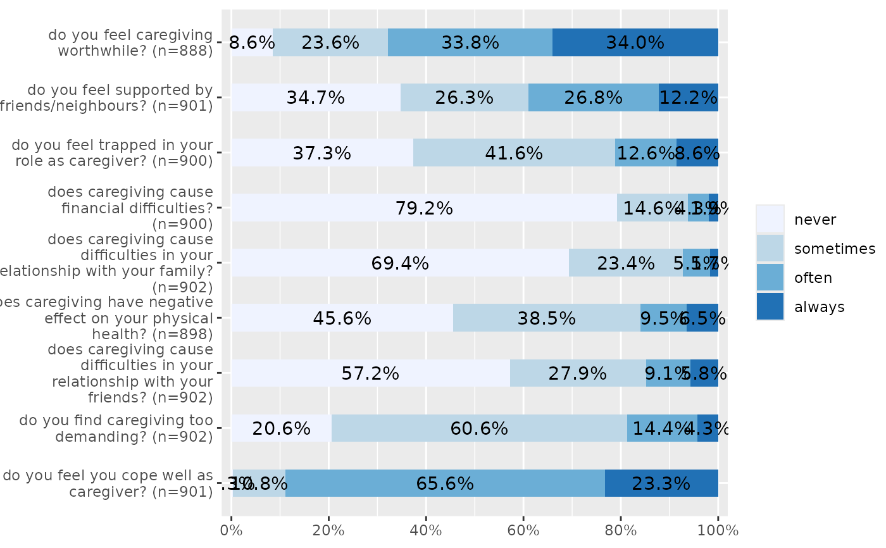
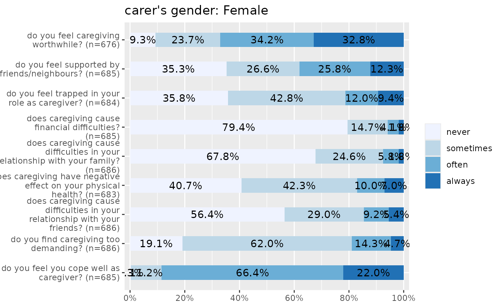

Plot items (variables) of a scale as stacked proportional bars. This function is useful when several items with identical scale/categoroies should be plotted to compare the distribution of answers.
plot_stackfrq( items, title = NULL, legend.title = NULL, legend.labels = NULL, axis.titles = NULL, axis.labels = NULL, weight.by = NULL, sort.frq = NULL, wrap.title = 50, wrap.labels = 30, wrap.legend.title = 30, wrap.legend.labels = 28, geom.size = 0.5, geom.colors = "Blues", show.prc = TRUE, show.n = FALSE, show.total = TRUE, show.axis.prc = TRUE, show.legend = TRUE, grid.breaks = 0.2, expand.grid = FALSE, digits = 1, vjust = "center", coord.flip = TRUE )
| items | Data frame, or a grouped data frame, with each column representing one item. |
|---|---|
| title | character vector, used as plot title. Depending on plot type and function,
will be set automatically. If |
| legend.title | character vector, used as title for the plot legend. |
| legend.labels | character vector with labels for the guide/legend. |
| axis.titles | character vector of length one or two, defining the title(s) for the x-axis and y-axis. |
| axis.labels | character vector with labels used as axis labels. Optional argument, since in most cases, axis labels are set automatically. |
| weight.by | Vector of weights that will be applied to weight all cases.
Must be a vector of same length as the input vector. Default is
|
| sort.frq | Indicates whether the
|
| wrap.title | numeric, determines how many chars of the plot title are displayed in one line and when a line break is inserted. |
| wrap.labels | numeric, determines how many chars of the value, variable or axis labels are displayed in one line and when a line break is inserted. |
| wrap.legend.title | numeric, determines how many chars of the legend's title are displayed in one line and when a line break is inserted. |
| wrap.legend.labels | numeric, determines how many chars of the legend labels are displayed in one line and when a line break is inserted. |
| geom.size | size resp. width of the geoms (bar width, line thickness or point size, depending on plot type and function). Note that bar and bin widths mostly need smaller values than dot sizes. |
| geom.colors | user defined color for geoms. See 'Details' in |
| show.prc | Logical, whether percentage values should be plotted or not. |
| show.n | Logical, whether count values hould be plotted or not. |
| show.total | logical, if |
| show.axis.prc | Logical, if |
| show.legend | logical, if |
| grid.breaks | numeric; sets the distance between breaks for the axis,
i.e. at every |
| expand.grid | logical, if |
| digits | Numeric, amount of digits after decimal point when rounding estimates or values. |
| vjust | character vector, indicating the vertical position of value
labels. Allowed are same values as for |
| coord.flip | logical, if |
A ggplot-object.
# Data from the EUROFAMCARE sample dataset library(sjmisc) data(efc) # recveive first item of COPE-index scale start <- which(colnames(efc) == "c82cop1") # recveive first item of COPE-index scale end <- which(colnames(efc) == "c90cop9") # auto-detection of labels plot_stackfrq(efc[, start:end])# works on grouped data frames as well library(dplyr) efc %>% group_by(c161sex) %>% select(start:end) %>% plot_stackfrq()#> #>#> #> ℹ Use `all_of(end)` instead of `end` to silence this message. #> ℹ See <https://tidyselect.r-lib.org/reference/faq-external-vector.html>. #> This message is displayed once per session.#>#> [[1]] #> [[1]][[1]] #> NULL #> #> [[1]][[2]]#> #> #> [[2]]#>